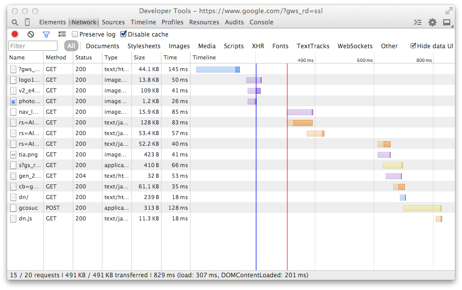

Performance Without Sacrificing Code Quality
Ken Struys
- Four years at Yelp
- homepage, signup, search of yelp.com
- Engineer Manager of Webcore
Yelp Dataset Challenge
- > 1 Million Reviews
- > 50 Thousand Businesses
- > 320 Thousand Business Attributes
- > 350 Thousand Users
- and More!
December 31, 2014 Deadline
$5,000 prize + $1,000 for publication + $500 for presenting*
*See full terms on website
Today
- Why performance matters
- What makes a web app performant
- Why code quality is important
- Performant high quality code at Yelp
Why Performance Matters
Steve Souders
- Pioneer of Frontend Performance
- A Backend engineer
- A Real Scientist
- Found the most common, serious issues and brought them to the public
Companies figured it out
- Half a second delay for search caused a 20% drop in traffic
- Amazon
- Amazon found every 100ms of latency cost them 1% in sales
Performance is Gratifying
- It can be measured
- It's easy (sometimes)
- Hardcore points
Performance is still manual
- Hard to assert performance of a web app
- All engineers need to understand performance
- Any engineer can cause performance to degrade
- "Performance First"
What makes an web app performant?
Your Education Helps
- Apply a scientific method to performance
- Always start with low hanging fruit and make it better
- You need data, Don't just guess
Measuring web apps
Slow DOMContentLoaded
- One of many examples
- Users can't see anything yet
- When users see a blank screen, they bounce
Slow DOMContentLoaded
<html>
<head>
<script src="http://yelp.com/main.js"></script>
</head>
<body>
<div id="feature-a"> . . . </div>
<div id="feature-b"> . . . </div>
<div id="feature-c"> . . . </div>
</body>
</html>
Fix is Easy
<html>
<head>
</head>
<body>
<div id="feature-a"> . . . </div>
<div id="feature-b"> . . . </div>
<div id="feature-c"> . . . </div>
<script src="http://yelp.com/main.js"></script>
</body>
</html>
Other Performance Fixes
- There's thousands of other issues
- ... be scientific
Going Down The Wrong Path
for (var i = 0; i < arr.length; i++) {
arr[i];
}
Make it Faster - Cache
for (var i = 0, length = arr.length; i < length; i++) {
arr[i];
}
Faster! - Compare to 0
for (var i = arr.length - 1; i >= 0; i++) {
arr[i];
}
Faster!!! - Reduce Download
i = arr.length;
while(i--) {
arr[i];
}
Reality Check
- ~1-2% Difference (with thousands of iterations)
- Significant developer overhead
- Will cause bugs
Closure Compiler
- Actual computer science
- JS to JS compiler
- Compiles to optimal code
- Minimal developer overheard
Performant, Quality Code
Make it work, then make it beautiful, then make it fast
Nathan Marz - creator of Storm
Make it work
Understand the problem and have a solution
Make it beautiful
Figure out the primitives that build your application
Make it fast
Optimize the primitives
Iterate
Don't Start with Fast
- Avoid highly optimized spaghetti
- Hard to read code is buggy
- Time spent fixing bugs = less time on performance
Let's Talk about Yelp
The Yelp Primary codebase
- 10 years of code
- > 200 engineers
- 138 Million uniques
We care about Performance
It's really hard to make yelp faster
Beautiful, Performant Code at Yelp
Understand what's slow
- Latency - 800ms
- Download - 11ms
- DOMContentLoaded - 100ms
Why is Latency High?
- Routing/Misc (10%)
- Database queries (70%)
- HTML Rendering (20%)
Here's Some Code
def load_page(request):
user_id = get_user_id(request)
business = Business.get(request.param['biz_id'])
reviews = TopReviews.get(business.id, limit=10)
deal = get_yelp_deal(business)
yelp_ad = get_ad(business, reviews)
reservations = get_reservations(business)
return render_page('business_page',
business=business,
reviews=reviews,
deal=deal,
yelp_ad=yelp_ad,
reservations=reservations,
)
What's Good About this Design?
- Easy to follow
- Reasonably Performant
- Load Data Once
What's not Great?
- Very Imperative
- Serial execution
- Order dependant
Make it beautiful
- We need better primitives
- We currently have a lot of primitives
- business, review, deal, etc
A better Primitive: an HTTP request
GET /biz/123 HTTP/1.1
Cookie: user_id=567
HTTP/1.1 200 OK
<html>
<head>...</head>
<body>
...
</body>
</html>
Apply the primitive
def load_page(request):
rendered_yelp_ad = ad_from_request(request)
rendered_deal = deal_from_request(request)
rendered_reservations = reservations_from_request(request)
return render_page('business_page',
rendered_deal,
rendered_yelp_ad,
rendered_reservations,
)
What's Better about this Design?
- No Dependencies
- Probably easier to test
- Order doesn't matter
- More Beautiful
What's not Great
- Clearly not "Performance First"
- Reload data in every function
How can we make to beautiful fast?
Order doesn't matter -> Execute in Parallel
Rendering Pipeline

How'd we do?
Results
- Original Latency - 800ms
- New Design Latency - 400ms
- Lots of low hanging fruit
Design
- Developers are happier
- Fewer bugs
- Easier to test
- New default is more performant
More Hardcore Engineering
- Work, Beautiful, Fast
- Optimize low hanging fruit
- Be scientific
Resources
- Steve Souder: stevesouders.com
- Nathan Marz: Suffering-oriented programming
- My Presentation: github.com/struys/uoft_fall_2014_presentation
- I'm always happy to help - @kenstruys
I want to work with passionate people
We're hiring
yelp.com/careers